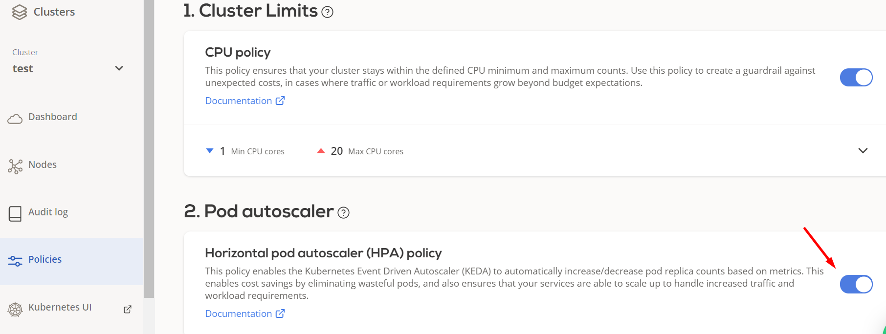

Horizontal Pod Autoscaler¶
Scaling an application¶
You can scale an application in two ways:
- Vertically: by adding more resources (RAM/CPU/Disk IOPS) to the same instance,
- Horizontally: by adding more instances (replicas) of the same application.
The problem with vertical scaling is that either the required hardware (RAM, CPU, Disk IOPS) in a single machine costs too much, or the cloud provider cannot provision a machine with enough resources.
We use replica sets in Kubernetes to achieve horizontal scaling. The Horizontal Pod Autoscaler allows automating the process of maintaining the replica count proportionally to the application load.
Horizontal scaling strategy¶
The horizontal scaling strategy involves adding (or removing) the additional replicas of the same application. The problem here lies in the fact that most application load patterns can have spikes that are not predictable. This renders manual scaling nearly impossible. Luckily, we can automate this process.
The HPA & KEDA¶
Kubernetes has the Horizontal Pod Autoscaler (HPA) functionality. It can scale up (add more replicas) or down (remove idling replicas) based on some metrics. However, HPA does not have the metrics' source by default. CAST AI offers you a solution with the KEDA addon.
How does it work¶
KEDA consists of two components:
- operator - watches k8s for ScaledObject resources and configures HPA accordingly
- metrics-apiserver - a bridge between Kubernetes and various scaling sources (including Prometheus)
These components configure Kubernetes HPA and set up the custom metric sources. This
enables us to autoscale almost any workload: Deployment, ReplicaSet, ReplicationController, or StatefulSet. KEDA supports autoscaling Jobs as well.
Enabling KEDA¶
To be able to autoscale, you will need to enable KEDA addon on the Policies page:
-
Navigate to an existing cluster (or see create cluster).
-
Go to the Policies menu.
-
Enable the Horizontal pod autoscaler policy.

Examples¶
Autoscale Based on CPU and/or Memory usage¶
Let's create a Deployment and a Service that we will Autoscale:
apiVersion: apps/v1
kind: Deployment
metadata:
name: sample-app
labels:
app: sample-app
spec:
# Note that we omit the replica count so
# when we redeploy, we wouldn't override
# replica count set by the autoscaler
#replicas: 1
selector:
matchLabels:
app: sample-app
template:
metadata:
labels:
app: sample-app
spec:
containers:
- image: luxas/autoscale-demo:v0.1.2
name: sample-app
ports:
- containerPort: 8080
---
apiVersion: v1
kind: Service
metadata:
name: sample-app
labels:
app: sample-app
spec:
ports:
- port: 8080
name: http
targetPort: 8080
protocol: TCP
selector:
app: sample-app
Note: We do not specify the ReplicaCount ourselves
Now set up a CPU-based Autoscaler
apiVersion: keda.sh/v1alpha1
kind: ScaledObject
metadata:
name: sample-app
spec:
scaleTargetRef:
name: sample-app
minReplicaCount: 1 # Optional. Default: 0
maxReplicaCount: 10 # Optional. Default: 100
triggers:
# Either of the triggers can be omitted.
- type: cpu
metadata:
# Possible values: `Value`, `Utilization`, or `AverageValue`.
# More info at: https://keda.sh/docs/2.0/scalers/cpu/#trigger-specification
type: "Value"
value: "30"
- type: memory
metadata:
# Possible values: `Value`, `Utilization`, or `AverageValue`.
# More info at: https://keda.sh/docs/2.0/scalers/memory/
type: "Value"
value: "512"
Now our Deployment autoscaling will be triggered either by CPU or Memory usage. We could use any other trigger, or remove either of those if we want (i.e. to autoscale only on the CPU basis and remove the Memory trigger, or vice-versa).
Autoscale based on the Prometheus metric¶
It is possible to autoscale based on the result of an arbitrary Prometheus query. CAST AI k8s clusters come with Prometheus deployed out-of-the-box.
Let's deploy the sample application again and instruct Prometheus to scrape metrics:
apiVersion: apps/v1
kind: Deployment
metadata:
name: sample-app
labels:
app: sample-app
spec:
selector:
matchLabels:
app: sample-app
template:
metadata:
labels:
app: sample-app
annotations:
# These annotations the main difference!
prometheus.io/path: "/metrics"
prometheus.io/port: "8080"
prometheus.io/scrape: "true"
spec:
containers:
- image: luxas/autoscale-demo:v0.1.2
name: sample-app
ports:
- containerPort: 8080
---
apiVersion: v1
kind: Service
metadata:
name: sample-app
labels:
app: sample-app
spec:
ports:
- port: 8080
name: http
targetPort: 8080
protocol: TCP
selector:
app: sample-app
Now let's deploy the Autoscaler.
apiVersion: keda.sh/v1alpha1
kind: ScaledObject
metadata:
name: sample-app
spec:
scaleTargetRef:
name: sample-app
minReplicaCount: 1 # Optional. Default: 0
maxReplicaCount: 10 # Optional. Default: 100
triggers:
- type: prometheus
metadata:
serverAddress: http://prom.castai:9090
metricName: http_requests_total_sample_app
threshold: '1'
# Note: query must return a vector/scalar single element response
query: sum(rate(http_requests_total{app="sample-app"}[2m]))
Now let's generate some load and observe that the replica count is increased:
# Deploy busybox image
kubectl run -it --rm load-generator --image=busybox /bin/sh
# Hit ENTER for command prompt
# trigger infinite requests to the php-apache server
while true; do wget -q -O- http://sample-app:8080/metrics; done
# in order to cancel, hold CTRL+C
# in order to quit, initiate CTRL+D sequence
Troubleshooting¶
Verify that KEDA is scheduled and running (the suffixes might be different):
$ kubectl get pods -n keda
NAME READY STATUS RESTARTS AGE
keda-metrics-apiserver-59679c9f96-5lfr5 1/1 Running 0 74m
keda-operator-66744fc69d-7njdd 1/1 Running 0 74m
Describe ScaledObject for clues. In this case, scaledObjectRef points to nonexistent object:
$ kubectl describe scaledobjects.keda.sh sample-app
Name: sample-app
Namespace: default
Labels: scaledObjectName=sample-app
Annotations: API Version: keda.sh/v1alpha1
Kind: ScaledObject
Metadata:
Creation Timestamp: 2020-11-10T10:12:38Z
Finalizers:
finalizer.keda.sh
Generation: 1
Managed Fields:
<... snip ...>
Resource Version: 394466
Self Link: /apis/keda.sh/v1alpha1/namespaces/default/scaledobjects/sample-app
UID: 9394d57a-ae66-4e80-baf4-8d6bb7fd36f9
Spec:
Advanced:
Horizontal Pod Autoscaler Config:
Behavior:
Scale Down:
Policies:
Period Seconds: 15
Type: Percent
Value: 100
Stabilization Window Seconds: 300
Restore To Original Replica Count: true
Cooldown Period: 300
Max Replica Count: 10
Min Replica Count: 1
Polling Interval: 30
Scale Target Ref:
API Version: apps/v1
Kind: Deployment
Name: sample-app
Triggers:
Metadata:
Metric Name: http_requests_total
Query: sum(rate(http_requests_total{app="sample-app"}[2m]))
Server Address: http://prom.castai:9090
Threshold: 1
Type: prometheus
Status:
Conditions:
Message: ScaledObject doesn't have correct scaleTargetRef specification
Reason: ScaledObjectCheckFailed
Status: False <--------- This means that this check didn't pass
Type: Ready
Message: ScaledObject check failed
Reason: UnkownState
Status: Unknown
Type: Active
Events: <none>
Inspect KEDA operator logs:
kubectl logs -n keda $(kubectl get pods -n keda -o name | grep operator)